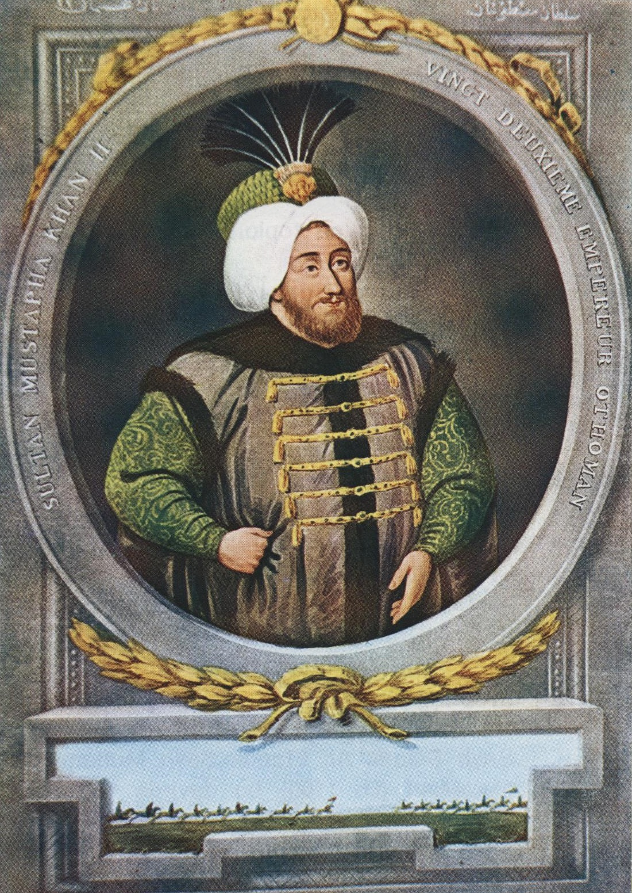

| önceki |  |
sonraki |
II. Mustafa, Osmanlı İmparatorluğu'nun yirmi ikinci padişahı ve 87. İslam halifesidir. Babası IV. Mehmed, annesi Gülnûş Emetullah Valide Sultan'dır. Osmanlı tarihinde ordunun başında bizzat sefere çıkan son padişahtır. Kutsal İttifak karşısında devleti kurtarmak için üç kez bizzat Avusturya üzerine sefere çıkmış; ancak 1697 Zenta hezimeti sonrası Osmanlı Devleti'nin tarihindeki ilk büyük toprak kaybı olan Karlofça Antlaşması'nı imzalamak zorunda kalmıştır.
Gaza İradesi ve Tarihi Hatt-ı Hümayunu
6 Şubat 1664 tarihinde Edirne'de doğdu. Amcası II. Ahmed'in vefatıyla 6 Şubat 1695'te 31 yaşında tahta çıktı. Tahta geçer geçmez yayımladığı tarihi fermanıyla saraydaki rehaveti reddettiğini ilan etti:
"Hatt-ı hümâyunumdur ki zevk ü safâyı kendimize haram kılmışızdır. Ceddimiz Sultan Süleyman gibi bizzat gazaya çıkacağız; siz ki vezirler ve beylersiniz, zevki bırakıp cenge hazırlanasız!"
Üç Büyük Avusturya Seferi ve Zenta Faciası (1697)
II. Mustafa sözünü tutarak aralıksız üç yıl boyunca ordusunun başında bizzat sefere çıktı:
- I. ve II. Seferler (1695 – 1696): 1695'te Lugoş ve Lipve zaferleri kazanıldı; Sakız Adası düşmandan temizlendi. 1696'da Ulaş Meydan Muharebesi'nde Avusturya ordusu mağlup edilerek padişaha "Gazi" unvanı verildi.
- Zenta Faciası (11 Eylül 1697): III. Sefer sırasında Osmanlı ordusu Tisa Nehri üzerindeki seyyar köprüden karşıya geçerken, dahi komutan Avusturya Prensi Eugene komutasındaki müttefik ordusu ani bir baskın düzenledi. Ordunun yarısı henüz nehri geçememişti. Sadrazam Elmas Mehmed Paşa göğüs göğüse çarpışarak şehit düştü; 30 bini aşkın Osmanlı askeri nehirde boğularak veya kılıçtan geçirilerek şehit oldu. Padişah nehrin karşı kıyısından bu dehşet verici manzarayı çaresizce gözyaşları içinde seyretti.
Karlofça Antlaşması (1699) ve Gerileme Devrinin Başlangıcı
Zenta hezimetinin ardından Osmanlı Devleti İngiltere ve Hollanda'nın arabuluculuğuyla barış istemek zorunda kaldı. 26 Ocak 1699'da imzalanan Karlofça Antlaşması ile:
- Macaristan'ın tamamı ve Erdel Avusturya'ya bırakıldı (160 yıllık Türk Macaristan'ı kaybedildi).
- Mora Yarımadası ve Dalmaçya kıyıları Venedik'e verildi.
- Podolya ve Ukrayna toprakları Lehistan'a terk edildi.
- 1700 İstanbul Antlaşması ile Azak Kalesi Rus Çarı I. Petro'ya bırakıldı ve Rusya'nın İstanbul'da elçi bulundurması kabul edildi.
Karlofça Antlaşması, Osmanlı Devleti'nin taarruz gücünü kaybettiği, savunma ve gerileme dönemine girdiği tarihi milattır.
Amcazâde Hüseyin Paşa Islahatları ve Edirne Vakası (1703)
Karlofça sonrasında Sadrazamlığa getirilen Köprülü ailesinden Amcazâde Hüseyin Paşa maliyeyi düzeltti, donanmada kalyonculuğa geçişi hızlandırdı. Ancak padişahın İstanbul'a dönmeyip Edirne'de yaşaması ve hocası Şeyhülislam Feyzullah Efendi'nin devlet idaresini tekeline alıp yolsuzluklara bulaşması bardağı taşırdı.
1703 Temmuzunda İstanbul'da patlak veren ve tarihe "Edirne Vakası" olarak geçen büyük ihtilalde yeniçeriler ve medreseliler Edirne'ye yürüdü. Şeyhülislam Feyzullah Efendi linç edildi. II. Mustafa, kan dökülmesini önlemek amacıyla 22 Ağustos 1703'te tahttan feragat ederek yerini kardeşi III. Ahmed'e bıraktı.
Vefatı
Tahttan çekildikten sadece dört ay sonra, 29 Aralık 1703 tarihinde henüz 39 yaşındayken yakalandığı prostat ve istiska rahatsızlığından vefat etti. Cenazesi İstanbul'da Eminönü Yeni Cami Turhan Valide Sultan Türbesi'ne defnedildi.
Ailesi
- Eşleri:
- Sâliha Sebkatî Vâlide Sultân (I. Mahmud'un annesi)
- Şehsuvar Vâlide Sultân (III. Osman'ın annesi)
- Afife Sultân
- Hafise Sultân
- Erkek çocukları: (Sonraki iki Osmanlı padişahının babasıdır)
- I. Mahmud (Osmanlı Padişahı, 1696 – 1754)
- III. Osman (Osmanlı Padişahı, 1699 – 1757)
- Şehzade Süleyman (1697 – 1697)
- Şehzade Mehmed (1698 – 1703)
- Şehzade Hasan (1699 – 1733)
- Şehzade Hüseyin (1699 – 1700)
- Şehzade Ahmed (1703 – 1703)
- Kız çocukları:
- Ayşe Sultân (Fazıl Mustafa Paşa'nın oğlu Köprülüzade Numan Paşa ile evlendi)
- Emine Sultân (Sadrazam Çorlulu Ali Paşa ile evlendi)
- Safiye Sultân (Maktulzade Ali Paşa ile evlendi)
- Rukiye Sultân
- Emetullah Sultân
II. Mustafa hakkında daha fazla bilgi için buraya tıklayın.